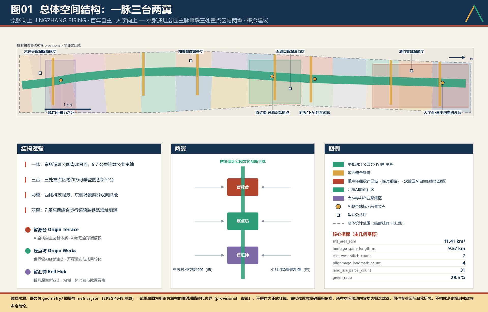
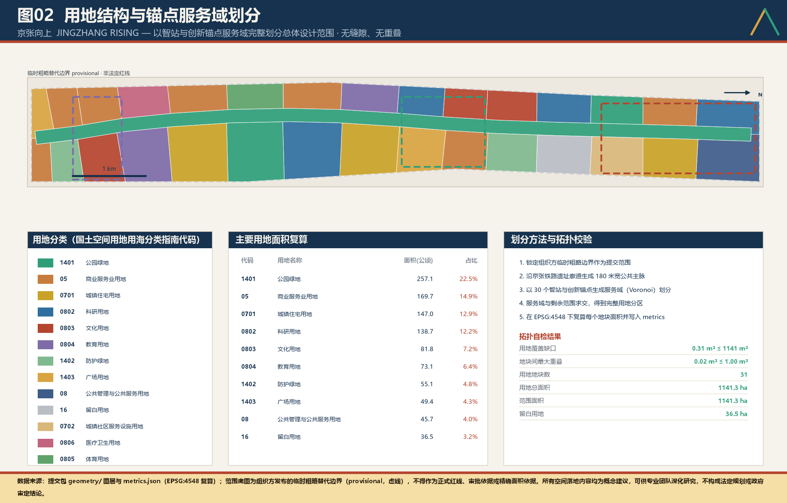
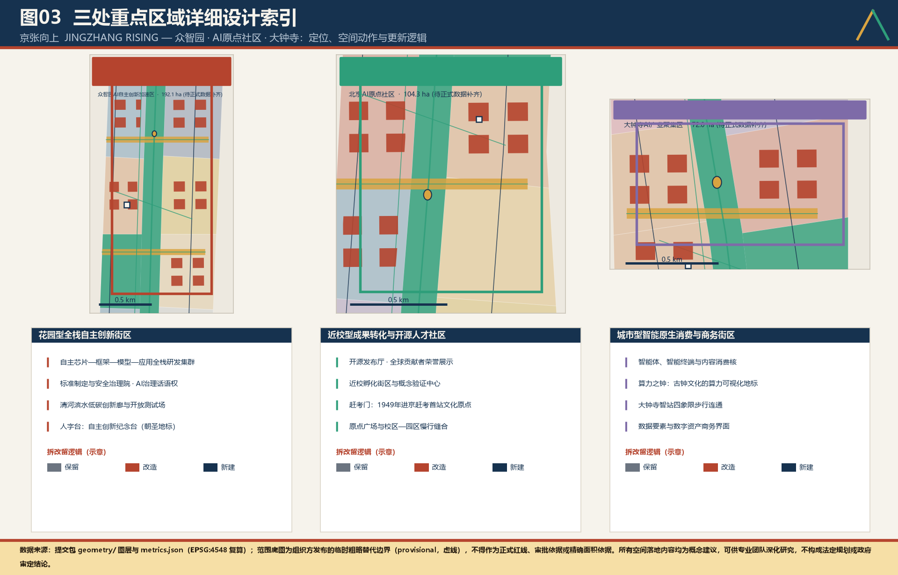
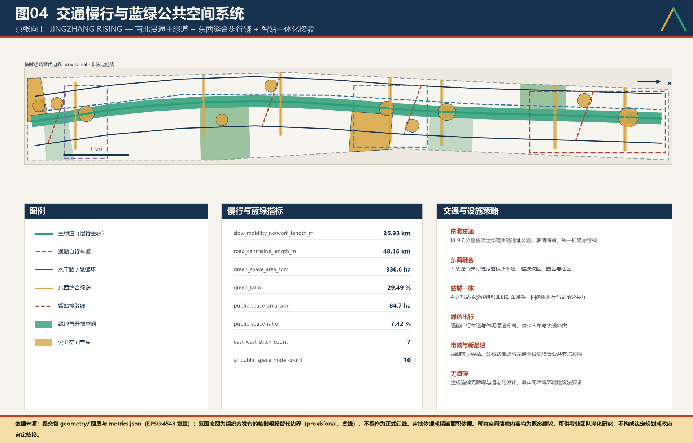
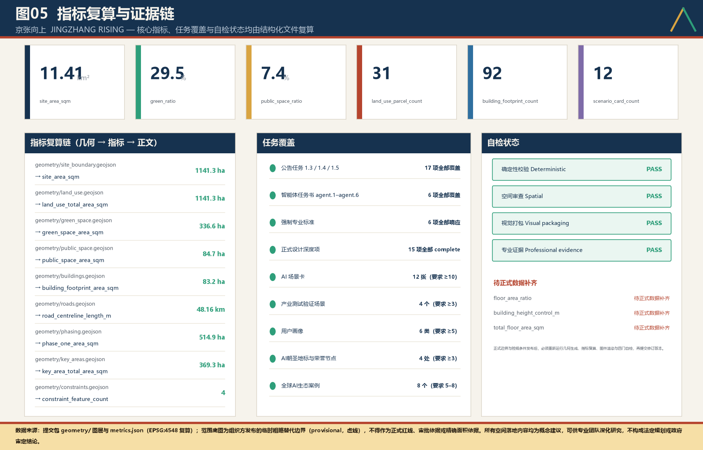

核心判断：以京张铁路百年自主精神为文化母题，把总体设计范围组织为“一脉三台两翼双缝”的AI创新带；任何面向公众的 AI 服务必须同时具备“人工兜底通道＋公开答卷”，二者缺一不得开放。全部图形由提交包 geometry/ 图层直接投影生成，全部数值由 metrics.json 复算，离线可用、无任何外部请求。
范围与重点区均采用组织方发布的临时粗略替代边界（provisional），仅为概念建议，不得作为正式红线、审批依据或精确面积依据；官方 polygon 发布后须整体重算。
总览地图
一脉三台两翼双缝的总体空间结构

三层范围
统筹研究、总体设计、重点区域的三层工作框架

重点区域
智源台、原点坊、智汇钟三处详细设计片区

人字台
1909 自主原点
詹天佑人字形展线，自主创新纪念台
赶考门
1949 赶考原点
清华园车站，技术自主是一场常考常新的赶考
算力之钟
1980 创新原点
大钟寺意象，实时可视化算力负载与绿电占比
原点碑
2026 AI原点
开源贡献者荣誉碑，让贡献被城市记住
用地分区
以 30 个锚点服务域完整划分，无缝隙无重叠
公园绿地防护绿地广场用地商业服务业用地城镇住宅用地城镇社区服务设施用地科研用地文化用地教育用地体育用地医疗卫生用地公共管理与公共服务用地留白用地
用地分类与规模
| 代码 | 名称 | 面积（公顷） | 占比 |
|---|---|---|---|
| 1401 | 公园绿地 | 257.1 | 22.5% |
| 05 | 商业服务业用地 | 169.7 | 14.9% |
| 0701 | 城镇住宅用地 | 147.0 | 12.9% |
| 0802 | 科研用地 | 138.7 | 12.2% |
| 0803 | 文化用地 | 81.8 | 7.2% |
| 0804 | 教育用地 | 73.1 | 6.4% |
| 1402 | 防护绿地 | 55.1 | 4.8% |
| 1403 | 广场用地 | 49.4 | 4.3% |
| 08 | 公共管理与公共服务用地 | 45.7 | 4.0% |
| 16 | 留白用地 | 36.5 | 3.2% |
| 0702 | 城镇社区服务设施用地 | 35.9 | 3.1% |
| 0806 | 医疗卫生用地 | 26.4 | 2.3% |
| 0805 | 体育用地 | 25.0 | 2.2% |
交通慢行
南北贯通主绿道与七条东西缝合步行链
主绿道（慢行主轴）通勤自行车道次干路 / 微循环东西缝合步行链智站接驳线

蓝绿公共空间
三级绿地系统与四处朝圣地标
人字台
1909 自主原点
詹天佑人字形展线，自主创新纪念台
赶考门
1949 赶考原点
清华园车站，技术自主是一场常考常新的赶考
算力之钟
1980 创新原点
大钟寺意象，实时可视化算力负载与绿电占比
原点碑
2026 AI原点
开源贡献者荣誉碑，让贡献被城市记住
建筑
92 栋建筑轮廓的保留、改造、新建分类原则
保留 retain改造 renovate新建 new_build
更新项目
公共先行、锚点带动的三期实施安排
一期 2026–2028
原点起势
主脉北段贯通、开源发布厅、人字台、首批场景开放清单
二期 2029–2031
中段织补
缝合链建成、全栈街坊、算力之钟、青年住房
三期 2032–2035
门户焕新
站城一体、南段门户、全带活动体系常态化
AI 场景
12 张场景卡、6 类人才画像、4 类产业测试
十二张 AI+ 场景卡
- AI 慢行导航与无障碍路径推荐
- 遗址公园多语种智能体导览
- 企业服务副驾一站办
- 城市运行体检与公共安全复盘
- 社区 AI 惠民服务点
- 开源模型公共评测与榜单
- 自动驾驶与无人配送开放测试
- 算力负载与绿电可视化
- 青年人才落地服务智能体
- 校地科研数据合规撮合
- 智能巡检与设施预测性维护
- 数字素养与 AI 通识课堂
六类人才画像
策源科学家
安静、长期、跨学科偶遇
开源工程师
低成本、强协作、被看见
创业者
快速验证、找钱找人
产业工程师
真实场景、真实数据
国际人才
语言友好、生活便利
本地居民
不被技术排斥、获得实惠
核心指标
由几何复算的 30 项 known 指标
核心指标（全部由 geometry/ 图层在 EPSG:4548 下复算）
site_area_sqm
1,141.3ha
heritage_spine_length_m
9.57km
green_ratio
29.49%
public_space_ratio
7.42%
land_use_parcel_count
31
east_west_stitch_count
7
building_coverage_ratio
7.29%
slow_mobility_network_length_m
25.93km
key_area_count
3
key_area_total_area_sqm
369.3ha
green_space_area_sqm
336.6ha
public_space_area_sqm
84.7ha
research_land_area_sqm
138.7ha
commercial_service_land_area_sqm
169.7ha
residential_land_area_sqm
147.0ha
reserved_land_area_sqm
36.5ha
building_footprint_count
92
building_footprint_area_sqm
83.2ha
road_centreline_length_m
48.16km
heritage_spine_area_sqm
172.3ha
land_use_total_area_sqm
1,141.3ha
phase_count
3
phase_one_area_sqm
514.9ha
ai_public_space_node_count
10
constraint_feature_count
4
scenario_card_count
12
industry_test_scenario_count
4
persona_count
6
pilgrimage_landmark_count
4
ecosystem_case_count
8

任务覆盖
公告 17 项任务与 agent.1–agent.6 的覆盖情况
| 任务 | 名称 | 覆盖 |
|---|---|---|
| 1.3.1 | 构建世界级AI创新生态体系 | 已覆盖 |
| 1.3.2 | 建设适配AI新质生产力的新型城市形态 | 已覆盖 |
| 1.3.3 | 打造全球AI创新人才向往的高品质城区 | 已覆盖 |
| 1.4.1 | 统筹研究范围 | 已覆盖 |
| 1.4.2 | 总体设计范围 | 已覆盖 |
| 1.4.3 | 重点区域范围 | 已覆盖 |
| 1.5.1.1 | 统筹研究范围：AI创新生态体系 | 已覆盖 |
| 1.5.1.2 | 统筹研究范围：适配人工智能的未来城市形态 | 已覆盖 |
| 1.5.2.1 | 总体设计范围：产业目标与功能布局 | 已覆盖 |
| 1.5.2.2 | 总体设计范围：城市更新总体框架 | 已覆盖 |
| 1.5.2.3 | 总体设计范围：交通轨道市政配套设施 | 已覆盖 |
| 1.5.2.4 | 总体设计范围：京张遗址公园活力带 | 已覆盖 |
| 1.5.2.5 | 总体设计范围：城市风貌 | 已覆盖 |
| 1.5.3.required | 重点区域范围详细设计必选项 | 已覆盖 |
| 1.5.3.1 | 众智园AI自主创新加速区 | 已覆盖 |
| 1.5.3.2 | 北京AI原点社区 | 已覆盖 |
| 1.5.3.3 | 大钟寺AI产业聚集区 | 已覆盖 |
| agent.1 | 一带总体概念与功能统筹方案设计 | 已覆盖 |
| agent.2 | AI全栈自主创新体系与世界级AI创新生态设计 | 已覆盖 |
| agent.3 | AI+场景赋能新范式与智能化AI活力城市设计 | 已覆盖 |
| agent.4 | AI公共空间、智能原生新业态与朝圣地标设计 | 已覆盖 |
| agent.5 | 百年京张文化、中关村文化与AI新文化融合叙事设计 | 已覆盖 |
| agent.6 | 一带全球AI创新活动体系与长期运营设计 | 已覆盖 |
自检状态
拓扑、边界可信度与证据完整性自检
拓扑校验
| 检查项 | 结果 | 容差 |
|---|---|---|
| 用地覆盖缺口 | 0.31 m² | ≤ 1141 m² |
| 地块间最大重叠 | 0.02 m² | ≤ 1.00 m² |
| 重点区标识完整性 | 3 / 3 | 必须 |
| 边界可信度标注 | provisional 已标注 | 必须 |
自检结果
| 检查项 | 结果 | 等级 | 内容 |
|---|---|---|---|
| DETERMINISTIC_VALIDATION | pass | blocking | deterministic_validation: PASS |
| SPATIAL_REVIEW | pass | blocking | spatial_review: PASS |
| VISUAL_PACKAGING | pass | blocking | visual_review: PASS |
| PROFESSIONAL_EVIDENCE | pass | blocking | professional_review: PASS |
来源
全部依据的登记与用途边界
| 来源 | 位置 | 类型 |
|---|---|---|
| SITE-PACKAGE | brief/site-package/ | official_public |
| SOURCE-REGISTRY | data/source_registry.json | repository_public_registry |
| PROCESSED-FACT-PACK | data/processed/agent_fact_pack.md | repository_processed_reference |
| BOUNDARY-SOURCE | brief/site-package/geometry/provisional_boundaries.geojson | agent_inferred_from_public_data |
| KEY-AREA-SOURCE | brief/site-package/geometry/provisional_boundaries.geojson | agent_inferred_from_public_data |
| OFFICIAL-ANNOUNCEMENT | https://ghzrzyw.beijing.gov.cn/zhengwuxinxi/tzgg/hd/202605/t20260509_4643047.html | official_public |
| AGENT-TASKBOOK | brief/site-package/agent_taskbook.json | user_provided_cleared |
假设
待专业确认的假设与复算触发条件
| 编号 | 状态 | 内容 |
|---|---|---|
| A-CONTROLS-001 | pending_professional_confirmation | Detailed regulatory controls, road redlines, ownership, municipal utilities, and engineering constraints must be confirmed from official attachments before statutory use. |
官方 SITE_BOUNDARY 与三处 KEY_AREA polygon 发布后，必须整体重跑几何生成、指标复算、图纸与本页生成。
答卷模拟器
选择一个场景，切换答卷六项的完成状态，观察三色准入结果
本模拟器展示“公开答卷”六项准入逻辑：六项全部齐备为绿色（正常运行），缺少任一非关键项为黄色（限期整改），缺少关键项（人工接管/服务承诺）为红色（停用）。逻辑与正文“人工兆底与公开答卷制度”完全一致。